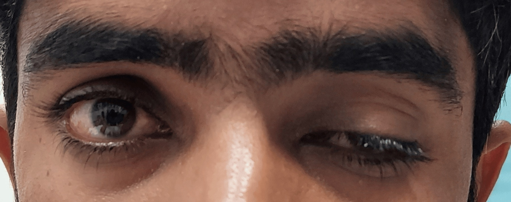

Pergunta central · fecho da trilha
Vignette 30 a e o fecho da trilha
Se a força muda com o uso — fatiga (MG) ou facilita (LEMS)? Mulher 30 a, 3 meses, bulbar flutuante.
Mulher 30 anos, previamente saudável, 3 meses de quadro progressivo de fraqueza do segmento craniocervical.
Engasgos frequentes; voz anasalada; no final do dia, pálpebra direita mais caída que a esquerda; diplopia discreta também ao final do dia; nega outras doenças ou história familiar neurológica.
Fatigabilidade ocular assimétrica + bulbar flutuante → suspeita miastenia gravis (forma generalizada).

Khan TA et al., Cureus 2024;16(7):e66885. Licensed under CC BY 4.0. Source: PMC11398882 · doi:10.7759/cureus.66885
Fim do dia · MG
A pálpebra cai mais ao final do dia — o hallmark da fatigabilidade. Bulbar flutuante (engasgos, voz anasalada) + ocular assimétrico: forma generalizada de MG.
Par decremental + anti-AChR
Exames mais adequados: ENMG com padrão decremental + anticorpo anti–receptor de acetilcolina. A combinação decremental + anti-AChR é o par diagnóstico nuclear pedido.
Mantra da placa motora
Mantra da placa: a força que muda com o uso — se muda, pergunta-se: fatiga (MG) ou facilita (LEMS)? Depois: alvo, ENMG, Ac, tórax.
Contraste 72 a × 30 a
| 72 a tabagista | 30 a bulbar flutuante |
|---|---|
| Proximal MI grau 3 · hiporreflexia · ptose · perda de peso | Craniocervical · engasgos · voz anasalada · ptose D fim do dia · diplopia fim do dia |
| ENMG incremental | ENMG decremental + anti-AChR |
| LEMS → CaPC | MG generalizada |
Dois case-cards lado a lado (72 a × 30 a) com gabaritos.
Quiz
Q1. Mulher 30 a, 3 meses, engasgos, voz anasalada, ptose D e diplopia fim do dia. Melhor par diagnóstico:
Gabarito: B. MG generalizada flutuante → decremental + AChR. LEMS pediria incremental + P/Q-VGCC.
Q2. Mantra correto da placa motora:
Gabarito: B. "Força que muda com o uso" — a primeira pergunta do raciocínio. Decide MG × LEMS antes do nome.
Q3. Saiu do olho com bulbar flutuante:
Gabarito: B. Saiu do olho = forma generalizada por definição operacional.